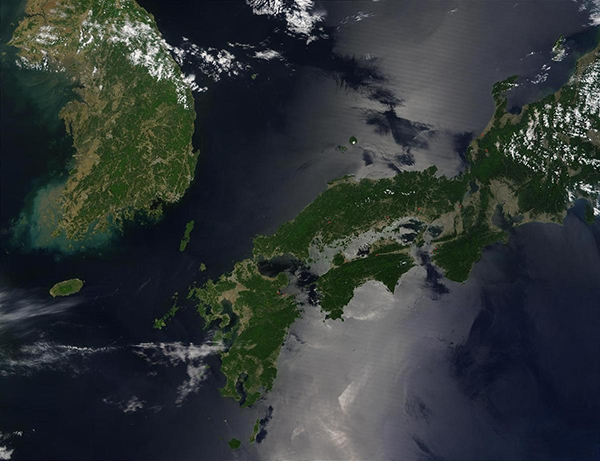

Introduction
In 1603, after decades of civil warfare, the Tokugawa shogunate (a military-led, dynastic government) ushered in a long period of relative political stability and isolation from foreign influence. For more than two centuries this policy enabled Japan to enjoy a flowering of its indigenous culture. Japan opened its ports after signing the Treaty of Kanagawa with the US in 1854 and began to intensively modernize and industrialize.
During the late 19th and early 20th centuries, Japan became a regional power that was able to defeat the forces of both China and Russia. It occupied Korea, Formosa (Taiwan), and southern Sakhalin Island. In 1931-32 Japan occupied Manchuria, and in 1937 it launched a full-scale invasion of China. Japan attacked US forces in 1941 - triggering America's entry into World War II - and soon occupied much of East and Southeast Asia.
After its defeat in World War II, Japan recovered to become an economic power and an ally of the US. While the emperor retains his throne as a symbol of national unity, elected politicians hold actual decision-making power. Following three decades of unprecedented growth, Japan's economy experienced a major slowdown starting in the 1990s, but the country remains an economic power.
In March 2011, Japan's strongest-ever earthquake, and an accompanying tsunami, devastated the northeast part of Honshu island, killed thousands, and damaged several nuclear power plants. Prime Minister Shinzo ABE was reelected to office in December 2012, and has since embarked on ambitious economic and security reforms to improve Japan's economy and bolster the country's international standing. In November 2019, ABE became Japan's longest-serving post-war prime minister.
Geography
Location
Japan is an island chain located between the North Pacific Ocean and the Sea of Japan, east of the Korean Peninsula.
Land Use
The following land use calculations includes Bonin Islands (Ogasawara-gunto), Daito-shoto, Minami-jima, Okino-tori-shima, Ryukyu Islands (Nansei-shoto), and Volcano Islands (Kazan-retto).
| Total (sq km) | Land (sq km) | Water (sq km) |
|---|---|---|
| 377,915 | 364,485 | 13,430 |
Natural Hazards
- volcanoes, many dormant and some active;
- seismic occurrences, about 1,500 every year;
- tsunamis;
- typhoons
People and Society
Population
The population of Japan is expected to reach 124.69 million by July 2021. This gives Japan the 11th largest population in comparison to the rest of the world.
(See the full rankings of countries by populations here.)
Ethnic Groups
The data represents the population by nationality as of 2016.
| Nationality | % of pop. |
|---|---|
| Japanese | 98.1 |
| Chinese | 0.5 |
| Korean | 0.4 |
| Other | 1 |
Note: The "Other" category includes Filipino, Vietnamese, and Brazilian. Up to 230,000 Brazilians of Japanese origin migrated to Japan in the 1990s to work in industries. Some have since returned to Brazil.
Age Structure
| Age Range (in years) | % of pop. | Total (Millions) | |
|---|---|---|---|
| Male | Female | ||
| 0-14 | 12.49 | 8.05 | 7.62 |
| 15-24 years | 9.47 | 6.25 | 5.64 |
| 25-54 years | 36.8 | 22.87 | 23.32 |
| 55-64 years | 12.06 | 7.56 | 7.57 |
| 65 years and over | 29.18 | 16.04 | 20.59 |
Economy
Overview
Over the past 70 years, government-industry cooperation, a strong work ethic, mastery of high technology, and a comparatively small defense allocation (slightly less than 1% of GDP) have helped Japan develop an advanced economy. Two notable characteristics of the post-World War II economy were the close interlocking structures of manufacturers, suppliers, and distributors, known as keiretsu, and the guarantee of lifetime employment for a substantial portion of the urban labor force. Both features have significantly eroded under the dual pressures of global competition and domestic demographic change.
Measured on a purchasing power parity basis that adjusts for price differences, Japan in 2017 stood as the fourth-largest economy in the world after first-place China, which surpassed Japan in 2001, and third-place India, which edged out Japan in 2012. For three postwar decades, overall real economic growth was impressive - averaging 10% in the 1960s, 5% in the 1970s, and 4% in the 1980s. Growth slowed markedly in the 1990s, averaging just 1.7%, largely because of the aftereffects of inefficient investment and the collapse of an asset price bubble in the late 1980s, which resulted in several years of economic stagnation as firms sought to reduce excess debt, capital, and labor. Modest economic growth continued after 2000, but the economy has fallen into recession four times since 2008.
Japan enjoyed an uptick in growth since 2013, supported by Prime Minister Shinzo ABE’s "Three Arrows" economic revitalization agenda - dubbed "Abenomics" - of monetary easing, "flexible" fiscal policy, and structural reform. Led by the Bank of Japan’s aggressive monetary easing, Japan is making modest progress in ending deflation, but demographic decline – a low birthrate and an aging, shrinking population – poses a major long-term challenge for the economy. The government currently faces the quandary of balancing its efforts to stimulate growth and institute economic reforms with the need to address its sizable public debt, which stands at 235% of GDP. To help raise government revenue, Japan adopted legislation in 2012 to gradually raise the consumption tax rate. However, the first such increase, in April 2014, led to a sharp contraction, so Prime Minister ABE has twice postponed the next increase, which is now scheduled for October 2019. Structural reforms to unlock productivity are seen as central to strengthening the economy in the long-run.
Scarce in critical natural resources, Japan has long been dependent on imported energy and raw materials. After the complete shutdown of Japan’s nuclear reactors following the earthquake and tsunami disaster in 2011, Japan's industrial sector has become even more dependent than before on imported fossil fuels. However, ABE’s government is seeking to restart nuclear power plants that meet strict new safety standards and is emphasizing nuclear energy’s importance as a base-load electricity source. In August 2015, Japan successfully restarted one nuclear reactor at the Sendai Nuclear Power Plant in Kagoshima prefecture, and several other reactors around the country have since resumed operations; however, opposition from local governments has delayed several more restarts that remain pending. Reforms of the electricity and gas sectors, including full liberalization of Japan’s energy market in April 2016 and gas market in April 2017, constitute an important part of Prime Minister Abe’s economic program.
Under the Abe Administration, Japan’s government sought to open the country’s economy to greater foreign competition and create new export opportunities for Japanese businesses, including by joining 11 trading partners in the Trans-Pacific Partnership (TPP). Japan became the first country to ratify the TPP in December 2016, but the United States signaled its withdrawal from the agreement in January 2017. In November 2017 the remaining 11 countries agreed on the core elements of a modified agreement, which they renamed the Comprehensive and Progressive Agreement for Trans-Pacific Partnership (CPTPP). Japan also reached agreement with the European Union on an Economic Partnership Agreement in July 2017, and is likely seek to ratify both agreements in the Diet this year.
Real GDP (PPP)
| Year | $ (Billions) |
|---|---|
| 2019 | $5.23 |
| 2018 | 5.20 |
| 2017 | 5.18 |
Industries
Japan is among the world's largest and most technologically advanced producers in a variety of industries, including:
- motor vehicles
- electronic equipment
- machine tools
- steel and nonferrous metals
- ships
- chemicals
- textiles
- processed foods